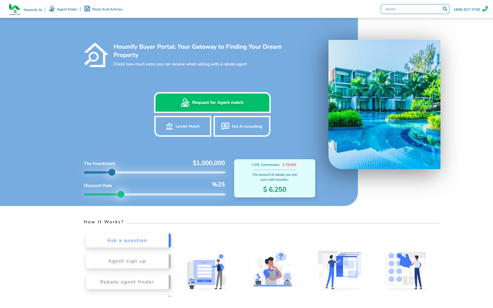
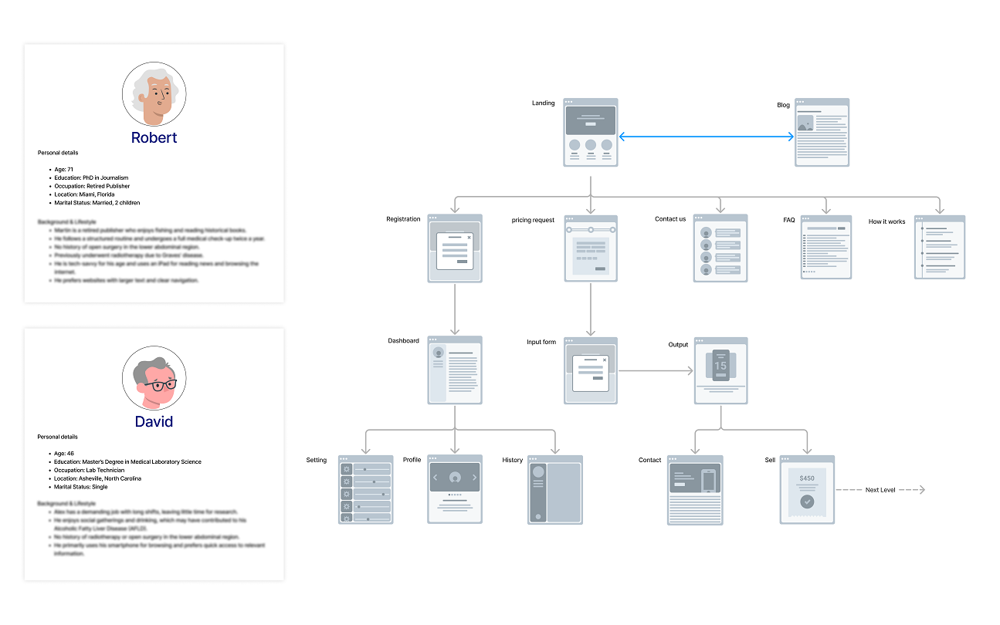
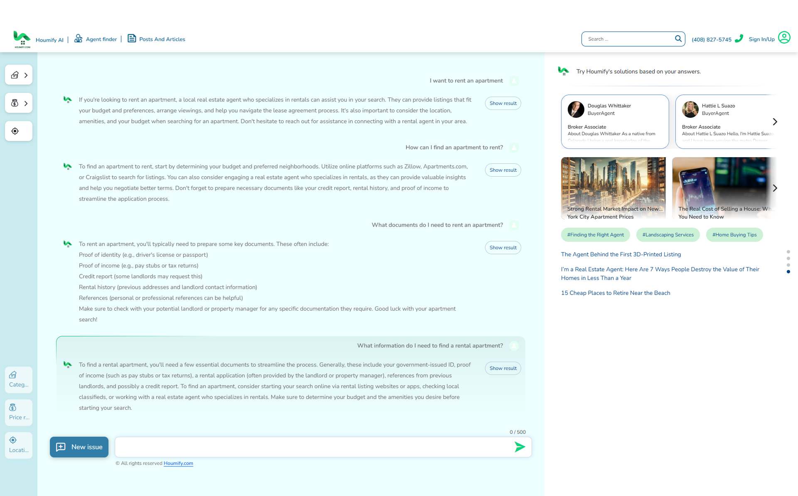

A real-estate platform that stopped acting like a social network

Houmify connected two sides of a real-estate transaction, agents and specialists on one side, buyers, sellers, and renters on the other, in a market where the client typically pays a significant fee to whoever they choose. The platform had been built with a social-networking mindset: put people in front of each other and let them connect. That missed what actually mattered to a client paying that fee. finding the right agent, not just any agent.
Proximity and ad spend aren't the same as quality
In the traditional model, a client picks an agent based on whichever ad they saw nearby, with no visibility into that agent's track record, pricing, or whether a better match existed a few streets over. Agents, in turn, had to spend their time and budget competing for visibility instead of competing on the value they could actually offer. Houmify's first version tried to solve this by making agents and clients simply reachable to each other, a social-platform pattern that never addressed the actual mismatch between what a client needed and which agent could deliver it.
Building a market instead of a contact list
Real estate agents, realtors, brokers, buyer and seller agents, mortgage loan officers, mortgage brokers, and consultants all served overlapping but distinct needs, and a client rarely knew which type they actually needed. I researched regional real-estate practices, laws, and customs, and worked closely with clients and a founder already established in the industry to define which parameters mattered for a match: transaction type, specialization, service area, language, and price range. Instead of open access between users, I redesigned the core mechanic around eligibility and competition: an agent could reach a client only if their profile matched that client's specific case, and multiple eligible agents could then compete for the same client, including on price.

Calculator / CTA / How it works?
User Personas / Sitemap / User FlowWhere the trade‑offs actually happened
Replacing free-form connection with parameter-based eligibility turned the platform into an actual market, where an agent's access to a client depended on fit, not just presence.
In phase two, the AI assistant became the main way less experienced users reached a match — a short conversation replaced the need to understand
Loan and fee calculators, plus ongoing state-level legal and tax updates, were built to keep users engaged through the full length of a transaction, not just at signup.
A matching market, with an AI shortcut for the parts people don't understand
The shipped platform matched clients to eligible agents based on transaction type, specialization, location, and language, and let qualified agents compete for the same client, including on discount. Users unfamiliar with real-estate processes could skip the category and filter logic entirely by talking to the AI assistant, which interpreted their situation and routed them directly to a matching agent. Loan cost calculators and state-specific legal and tax updates kept the platform useful well past the initial match.

AI Assistant / Search / Agent FinderWhat the redesign delivered
What's worth a second look
Redesigning the core mechanic from open access to competitive matching solved the main problem, but that same competitive layer adds pressure I didn't fully resolve, agents optimizing for discount to win a match can end up competing on price alone, which isn't always the same as the best outcome for the client.